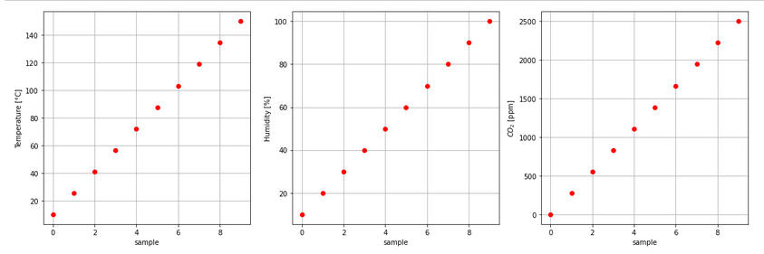

Retrieve Data
def _get_cloud_asset_data(device, time_from, time_to, asset_name, pagenmb):
"""
Retrieves paged collection of historical asset states within provided time range.
https://api.allthingstalk.io/swagger/ui/index#operation/AssetStates_GetAssetHistoricalStates
Parameters
----------
device: type dict
device description (defined in a json file)
time_from: str
start time, ex. 2020-09-08T00:00:00 (iso8601 format)
time_to: str
end time, ex. 2020-09-08T23:59:59 (iso8601 format)
pagenmb: int
Page in the result set
Returns
-------
response.json()['data']:
"""
url = "https://"+device["device"]["authentication"]["api"]+\
"/device/"+device["device"]["authentication"]["Device_ID"]+\
"/asset/"+asset_name+"/states?from="+time_from+"&to="+time_to+"&page"+str(pagenmb)
payload = {}
headers = {
'Authorization': device["device"]["authentication"]["Ground_Token"],
'Content-Type': 'application/json'
}
response = requests.request("GET", url, headers=headers, data = payload)
return response.json()['data']
def _fill_missing_data(timestamp, data):
k = 0
new_data = []
for i in range(len(timestamp)):
if timestamp[i] == data[k]['at']:
new_data.append(data[k])
k = k + 1
else:
new_data.append({'at': timestamp[i], 'data': -666})
return new_data
def _get_timestamps(cloud_data):
length = []
for i in range(len(cloud_data)):
length.append(len(cloud_data[i]))
pos_max_value = length.index(max(length))
timestamp = []
for i in range(max(length)):
timestamp.append(cloud_data[pos_max_value][i]['at'])
return timestamp
def cloud_data_to_df(device, time_from, time_to):
"""
Retrieve Cloud data and translate it to a pandas dataframe
Raw data from the assets: Counter, Temperature_degC, Humidity_perc, CO2_ppm
Important:
----------
- take max. 24h or 1 day
- time in UTC - ISO 8601 Format
Parameters
----------
device: type dict
device description (defined in a json file)
time_from: str
start time, ex. 2020-09-08T00:00:00 (iso8601 format)
time_to: str
end time, ex. 2020-09-08T23:59:59 (iso8601 format)
Returns
-------
cloud_data_df: df
a pandas dataframe is returned
Example
-------
>>> import json
>>> import pandas as pd
"""
columns = ['time']
for asset_nmb in range(len(device["device"]["assets"])):
asset = 'asset#' + str(asset_nmb)
columns.append(device["device"]["assets"][asset]["name"])
cloud_data_df = pd.DataFrame(index=range(0), columns=columns)
asset_name = []
asset_unit = []
for asset_nmb in range(len(device["device"]["assets"])):
asset = 'asset#' + str(asset_nmb)
asset_name.append(device["device"]["assets"][asset]["name"])
asset_unit.append(device["device"]["assets"][asset]["profile"]["unit"])
cloud_data = []
for name in asset_name:
cloud_data.append(_get_cloud_asset_data(device, time_from, time_to, name, 0))
# ------------------------------------------------------------------------------------------------------------------
new_cloud_data = []
for i in range(len(cloud_data)):
new_cloud_data.append(_fill_missing_data(_get_timestamps(cloud_data), cloud_data[i]))
cloud_data = new_cloud_data
# ------------------------------------------------------------------------------------------------------------------
for k in range(len(cloud_data[0])):
date_time_str = cloud_data[0][k]['at'][0:10] + ' ' + cloud_data[0][k]['at'][11:19]
sample = {'time': datetime.datetime.strptime(date_time_str, '%Y-%m-%d %H:%M:%S'),
asset_name[0]: int(cloud_data[0][k]['data']),
asset_name[1]: float(cloud_data[1][k]['data']),
asset_name[2]: float(cloud_data[2][k]['data']),
asset_name[3]: int(cloud_data[3][k]['data']),
}
cloud_data_df = cloud_data_df.append(sample, ignore_index=True)
return cloud_data_df
Below an Python example script where we send 10 samples (temperature, humidity and CO2) to the Cloud.
# data samples
import numpy as np
import matplotlib.pyplot as plt
# 10 samples
nmb_samples = 10
Temp_degC = np.linspace(10, 150, num=nmb_samples)
Hum_perc = np.linspace(10, 100, num=nmb_samples)
CO2_ppm = np.linspace(0, 2500, num=nmb_samples)
fig, (ax1, ax2, ax3) = plt.subplots(1, 3, figsize=(15,5))
ax1.set(xlabel='sample', ylabel='Temperature [°C]')
ax1.plot(Temp_degC, 'ro')
ax1.grid()
ax2.set(xlabel='sample', ylabel='Humidity [%]')
ax2.plot(Hum_perc, 'ro')
ax2.grid()
ax3.set(xlabel='sample', ylabel='$CO_{2}$ [ppm]')
ax3.plot(CO2_ppm, 'ro')
ax3.grid()
fig.tight_layout()

import time
import datetime
import json
import requests
import serial
with open('device.json') as json_file:
device = json.load(json_file)
# Time between two samples
SAMPLING_TIME = 20
nmb_samples = 10
# send data to the Cloud
for i in range(nmb_samples):
start_sample = time.perf_counter()
timestamp = datetime.datetime.utcnow().isoformat()
sensor_data = ['OK', str(i), str(round(Temp_degC[i],1)), str(int(Hum_perc[i])), str(int(CO2_ppm[i])), 'X\r\n']
response = send_data(device, timestamp, sensor_data)
print('sample:',i, ' - ', timestamp,' - ', sensor_data, ' - ', response)
finish_sample = time.perf_counter()
time.sleep(int(SAMPLING_TIME) - int(round(finish_sample - start_sample, 2)))
Terminal output:
sample: 0 - 2021-08-27T08:32:53.982653 - ['OK', '0', '10.0', '10', '0', 'X\r\n'] - ok
sample: 1 - 2021-08-27T08:33:14.326736 - ['OK', '1', '25.6', '20', '277', 'X\r\n'] - ok
sample: 2 - 2021-08-27T08:33:34.558799 - ['OK', '2', '41.1', '30', '555', 'X\r\n'] - ok
sample: 3 - 2021-08-27T08:33:54.771425 - ['OK', '3', '56.7', '40', '833', 'X\r\n'] - ok
sample: 4 - 2021-08-27T08:34:15.004256 - ['OK', '4', '72.2', '50', '1111', 'X\r\n'] - ok
sample: 5 - 2021-08-27T08:34:35.217754 - ['OK', '5', '87.8', '60', '1388', 'X\r\n'] - ok
sample: 6 - 2021-08-27T08:34:55.440844 - ['OK', '6', '103.3', '70', '1666', 'X\r\n'] - ok
sample: 7 - 2021-08-27T08:35:15.669162 - ['OK', '7', '118.9', '80', '1944', 'X\r\n'] - ok
sample: 8 - 2021-08-27T08:35:35.883873 - ['OK', '8', '134.4', '90', '2222', 'X\r\n'] - ok
sample: 9 - 2021-08-27T08:35:56.144285 - ['OK', '9', '150.0', '100', '2500', 'X\r\n'] - ok
Data on the pinboard:
Below the Python script to retrieve data from the Cloud.
import json
import pandas as pd
with open('device.json') as json_file:
device = json.load(json_file)
time_from = '2021-08-27T08:32:53'
time_to = '2021-08-27T08:35:57'
cloud_data_df = cloud_data_to_df(device, time_from, time_to)
cloud_data_df.head(10)
Dataframe (data from the Cloud):
Comparison, data send and data retrieved.
fig, (ax1, ax2, ax3) = plt.subplots(1, 3, figsize=(15,5))
ax1.set(xlabel='sample', ylabel='Temperature [°C]')
ax1.plot(Temp_degC, 'ro', label='data')
ax1.plot(cloud_data_df['Temperature_degC'], 'bx', label='Cloud data')
ax1.grid()
ax1.legend()
ax2.set(xlabel='sample', ylabel='Humidity [%]')
ax2.plot(Hum_perc, 'ro', label='data')
ax2.plot(cloud_data_df['Humidity_perc'], 'bx', label='Cloud data')
ax2.grid()
ax2.legend()
ax3.set(xlabel='sample', ylabel='$CO_{2}$ [ppm]')
ax3.plot(CO2_ppm, 'ro', label='data')
ax3.plot(cloud_data_df['CO2_ppm'], 'bx', label='Cloud data')
ax3.grid()
ax3.legend()
fig.tight_layout()